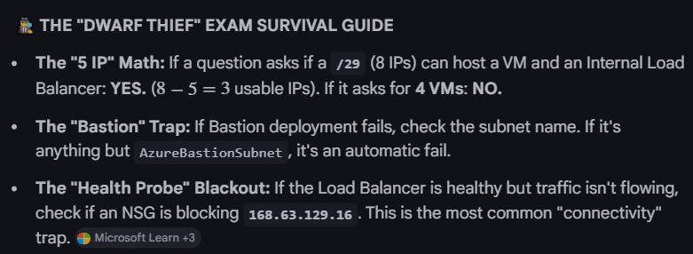
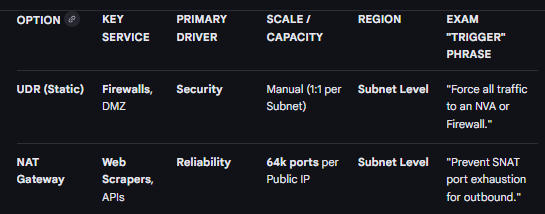
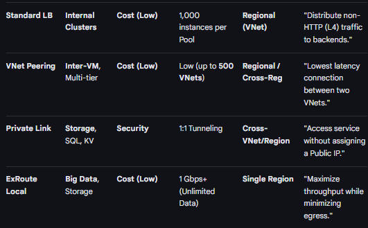
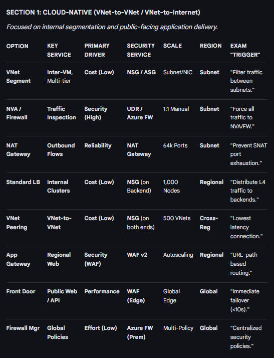
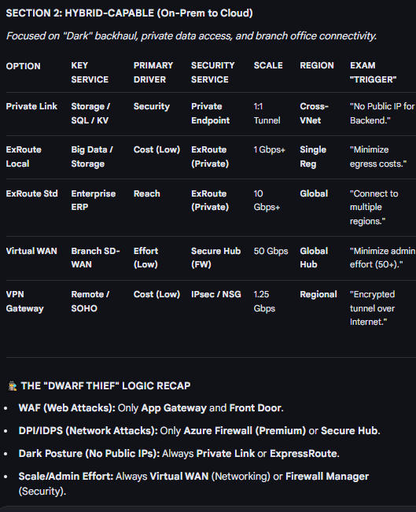

AZ700
Route Tables
Availability Zones
-
Inbound Endpoint: Allows On-Prem to resolve Azure Private DNS zones.
-
Outbound Endpoint: Allows Azure to resolve On-Prem domains via Forwarding Rules.
-
The "Thief" Intel: Use this when the prompt mentions "resolving Private Endpoints from a local data center".





-
SNAT Ratio: 1-50 VMs = 1,024 ports. (Halve the ports for every doubling of VMs).
-
Routing King: UDR always beats BGP and System routes for the same prefix.
-
Global Failover (Logic):
If (Region - Fastest) <= Threshold -> Use Weight. Otherwise, use Fastest.
| FEATURE | PRIMARY PURPOSE | EXAM "TRIGGER" PHRASE |
|---|---|---|
| Connectivity Group | Automatic Mesh/Hub-Spoke. | "Dynamically manage peering between 100+ VNets." |
| Security Admin Rule | Global "Mandatory" rules. | "Enforce a security rule that cannot be overridden by local NSGs." |
| Network Group | Dynamic membership. | "Automatically group VNets based on tags or naming." |